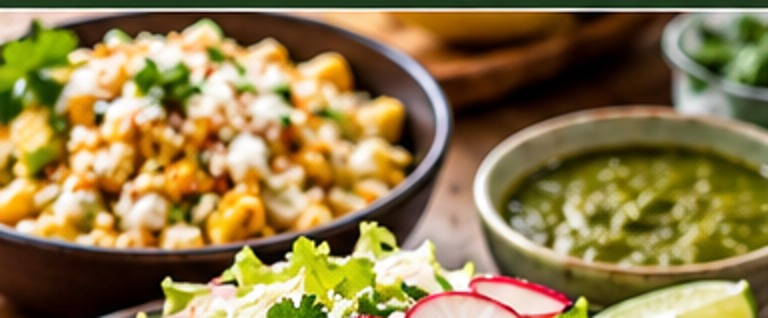

Mexican · Side · Serves 4 · 25 minutes
Esquites-Style Charred Corn Salad

Ingredient amounts are estimates when scaled. Original recipe and AnyList import remain unchanged.
Ingredients
- 4 cups corn kernels
- 1 Tbsp neutral oil
- 1/4 cup mayonnaise
- 1/4 cup sour cream
- 1/3 cup cotija cheese
- 1/2 lime, juiced (add more to taste)
- 1/2 tsp chile powder or Tajín
- 2 Tbsp cilantro
- Salt to taste
Instructions
- Heat a wide skillet until very hot. Char corn in oil for 8–10 minutes, stirring occasionally.
- Whisk sour cream with 1 tsp milk or water until pourable, adding another tsp if needed. Toss warm corn with mayonnaise, thinned sour cream, cotija, juice of half a lime, chile powder, cilantro and salt. Taste and add more lime only if needed.
- Serve with extra lime and chile at the table.